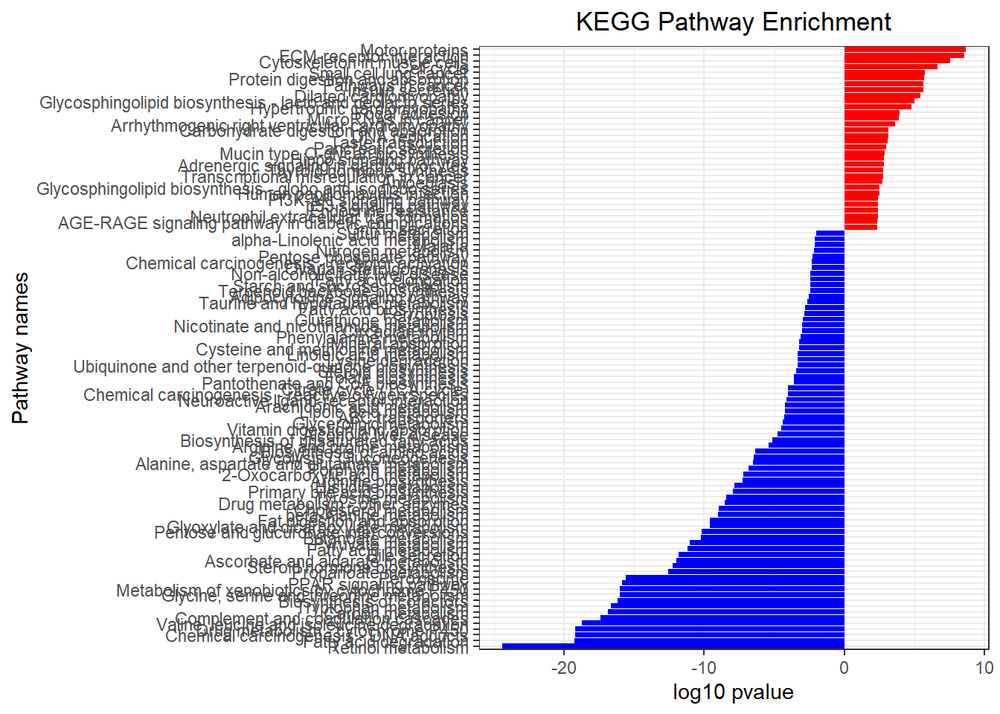
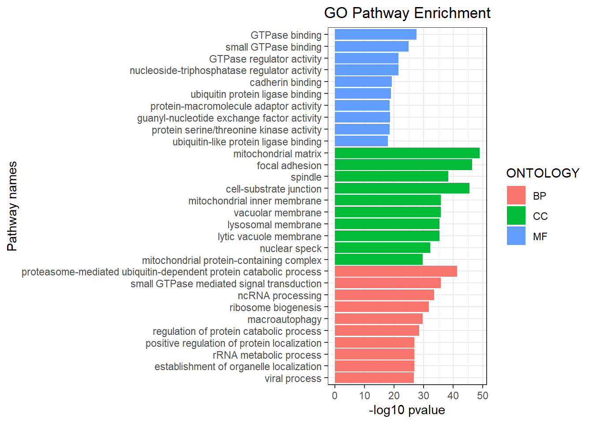

Code
# BiocManager::install('clusterProfiler')
# BiocManager::install("org.Hs.eg.db")
DEG <- read.csv("data/resOrdered.csv")
DESeq2_DEG = na.omit(DEG) 基因本体论 （Gene Ontology，GO） 或京都基因与基因组百科全书 （Kyoto Encyclopedia of Genes and Genomes，KEGG）。clusterProfiler
# BiocManager::install('clusterProfiler')
# BiocManager::install("org.Hs.eg.db")
DEG <- read.csv("data/resOrdered.csv")
DESeq2_DEG = na.omit(DEG) 对于有参考基因组物种的分析，可以在相关软件包中直接加载该物种的背景基因集 （1）对于常见的模式物种，例如人类，有些专门的 R 包数据库，例如人类参考基因组 hg19 的 library(org.Hs.eg.db)
nrDEG <- DESeq2_DEG
head(nrDEG)| X | baseMean | log2FoldChange | lfcSE | stat | pvalue | padj |
|---|---|---|---|---|---|---|
| PXMP2 | 3303.9740 | -4.358943 | 0.1586085 | -27.48240 | 0 | 0 |
| ADI1 | 19536.2020 | -3.691431 | 0.1697194 | -21.75020 | 0 | 0 |
| GCH1 | 2414.1097 | -3.911011 | 0.1837280 | -21.28697 | 0 | 0 |
| LAMC2 | 5634.3177 | 5.985967 | 0.2836914 | 21.10028 | 0 | 0 |
| GRHPR | 18226.4198 | -3.499262 | 0.1744931 | -20.05388 | 0 | 0 |
| AQP11 | 418.2064 | -3.818445 | 0.1936607 | -19.71718 | 0 | 0 |
nrDEG$expression <- as.factor(
ifelse( nrDEG$padj< 0.2 & abs(nrDEG$log2FoldChange) >= 1,
ifelse( nrDEG$log2FoldChange >= 1 , 'up', 'down' ),
'normal'))
table(nrDEG$expression)
#>
#> down normal up
#> 2762 8704 3349
gtf_mrna_v22 <- read_csv(file = "data/gtf_mrna_v22.csv")
nrDEG <- nrDEG |>
inner_join(gtf_mrna_v22, by = c( "X"= "gene_name"))
rownames(nrDEG) <- str_sub(nrDEG$gene_id, start = 1, end = 15)
nrDEG$ENSEMBL <- rownames( nrDEG )
library(clusterProfiler)
library(org.Hs.eg.db)
AnnotationDbi::keytypes(org.Hs.eg.db)
#> [1] "ACCNUM" "ALIAS" "ENSEMBL" "ENSEMBLPROT" "ENSEMBLTRANS"
#> [6] "ENTREZID" "ENZYME" "EVIDENCE" "EVIDENCEALL" "GENENAME"
#> [11] "GENETYPE" "GO" "GOALL" "IPI" "MAP"
#> [16] "OMIM" "ONTOLOGY" "ONTOLOGYALL" "PATH" "PFAM"
#> [21] "PMID" "PROSITE" "REFSEQ" "SYMBOL" "UCSCKG"
#> [26] "UNIPROT"
head(keys(org.Hs.eg.db, "ENSEMBL"))
#> [1] "ENSG00000121410" "ENSG00000175899" "ENSG00000291190" "ENSG00000171428"
#> [5] "ENSG00000156006" "ENSG00000196136"
valid_ensembl <- rownames(nrDEG) %in% keys(org.Hs.eg.db, "ENSEMBL")
nrDEG_filtered <- nrDEG[valid_ensembl, ]
df <- bitr(
geneID= rownames(nrDEG_filtered),
fromType = "ENSEMBL",
toType = c( "ENTREZID","SYMBOL" ),
OrgDb = org.Hs.eg.db )
head(df)| ENSEMBL | ENTREZID | SYMBOL |
|---|---|---|
| ENSG00000176894 | 5827 | PXMP2 |
| ENSG00000182551 | 55256 | ADI1 |
| ENSG00000131979 | 2643 | GCH1 |
| ENSG00000058085 | 3918 | LAMC2 |
| ENSG00000137106 | 9380 | GRHPR |
| ENSG00000178301 | 282679 | AQP11 |
nrDEG_filtered$SYMBOL = rownames(nrDEG_filtered)
nrDEG = inner_join(nrDEG_filtered, df, by='ENSEMBL' )
gene_up = nrDEG[ nrDEG$expression == 'up', "ENTREZID" ]
gene_down = nrDEG[ nrDEG$expression == 'down', "ENTREZID"]
gene_all = as.character(nrDEG[ ,"ENTREZID"])对于各列内容：
ID和Description，富集到的通路和功能描述；
GeneRatio和BgRatio，分别为富集到该通路中的基因数目/给定基因的总数目，以及该通路中背景基因总数目/该物种所有已知的KEGG功能基因数目；
pvalue、p.adjust和qvalue，p值、校正后p值和q值信息；
geneID和Count，富集到该通路中的基因名称和数目。
注：本示例分析中使用的entrze id，故这里也显示的entrze id。如使用其它类型的基因名称，如symbol id等类型，可在结果中对entrze id和symbol id做个转换。
kegg_up <- clusterProfiler::enrichKEGG(gene = gene_up ,
organism= 'hsa',
keyType = "kegg",
pvalueCutoff = 0.1,
pAdjustMethod = "fdr", # FDR多重假设检验校正 qvalue
universe= gene_all,
minGSSize = 10,
maxGSSize = 500,
qvalueCutoff = 0.05 )
kegg_down <- clusterProfiler::enrichKEGG( gene = gene_down ,
organism= 'hsa',
keyType = "kegg",
pvalueCutoff = 0.05,
pAdjustMethod = "fdr",
universe= gene_all,
minGSSize = 10,
maxGSSize = 500,
qvalueCutoff = 0.05 )df_up<- as.data.frame(kegg_up)
df_down<- as.data.frame(kegg_down)df_up <- df_up[df_up$pvalue < 0.05, ]
df_down <- df_down[df_down$pvalue < 0.05, ]
df_up <- df_up |>
dplyr::mutate(group=1)
df_down <- df_down |>
dplyr::mutate(group=-1)dat <- rbind(df_up,df_down)
head(dat)| category | subcategory | ID | Description | GeneRatio | BgRatio | pvalue | p.adjust | qvalue | geneID | Count | group | |
|---|---|---|---|---|---|---|---|---|---|---|---|---|
| hsa04814 | Cellular Processes | Cell motility | hsa04814 | Motor proteins | 64/1391 | 154/6721 | 0.0e+00 | 5.00e-07 | 4.00e-07 | 3833/64837/146909/11004/9493/146439/81930/56171/3797/9928/7138/147700/3832/24137/1062/347240/10112/10381/55930/53904/55083/80179/127602/10126/1781/90990/7171/92558/84516/8632/113220/56992/11127/51626/7139/83544/196385/84617/7846/7170/3796/7169/3801/7168/140465/79659/10376/22920/4651/27175/9585/1767/8701/1770/10398/23303/23046/79819/146754/84790/72/1780/7136/4648 | 64 | 1 |
| hsa04512 | Environmental Information Processing | Signaling molecules and interaction | hsa04512 | ECM-receptor interaction | 39/1391 | 76/6721 | 0.0e+00 | 5.00e-07 | 4.00e-07 | 3918/3691/6696/80144/3696/3911/3915/1298/3673/3675/3914/3685/3161/375790/255743/7059/3909/1284/3912/1311/3655/3694/1282/3371/3693/3678/3674/1293/3688/3339/7058/1287/1277/1278/3910/1288/1285/9900/22801 | 39 | 1 |
| hsa04820 | NA | NA | hsa04820 | Cytoskeleton in muscle cells | 69/1391 | 180/6721 | 0.0e+00 | 3.20e-06 | 2.70e-06 | 3691/84033/3696/81624/1298/7138/3673/3675/84823/1829/9260/7171/114793/483/476/1462/3685/27063/375790/7139/272/7431/7059/7170/1284/481/7169/1311/4001/91010/3655/7168/3694/1282/2318/8082/2275/2026/3693/3678/3674/1293/478/4703/3688/3339/3728/7058/752/1289/1287/29767/1277/8572/10398/200539/1278/88/1824/1288/1285/1301/1837/1281/51332/22801/287/72/7136 | 69 | 1 |
| hsa04110 | Cellular Processes | Cell growth and death | hsa04110 | Cell cycle | 59/1391 | 153/6721 | 2.0e-07 | 1.94e-05 | 1.62e-05 | 4172/1875/7042/9088/4998/9133/991/891/699/983/113130/701/5347/81620/898/9212/1870/1869/9319/90381/9232/990/995/5933/890/8318/7272/10403/23594/27085/2810/4171/7534/4085/4173/4176/4175/80174/1111/1663/8317/151648/25/1029/1019/157570/1871/7157/1022/1030/4174/993/4088/9134/1031/894/7040/1032/9700 | 59 | 1 |
| hsa05222 | Human Diseases | Cancer: specific types | hsa05222 | Small cell lung cancer | 38/1391 | 89/6721 | 1.9e-06 | 9.33e-05 | 7.76e-05 | 3918/3911/3915/898/1870/1869/3673/3675/3914/578/7188/3685/1019/1163/3909/1284/1871/3912/7157/3655/1030/7186/598/1282/7185/330/3674/581/10000/3688/9134/1287/3910/1288/1285/1164/596/4843 | 38 | 1 |
| hsa04974 | Organismal Systems | Digestive system | hsa04974 | Protein digestion and absorption | 33/1391 | 73/6721 | 1.9e-06 | 9.33e-05 | 7.76e-05 | 169044/1300/1298/483/476/1294/1295/6510/3784/206358/1306/1307/1284/481/1282/486/1293/478/8645/6550/1289/1287/1296/1277/9056/1305/1278/1288/1285/1301/3783/1303/1281 | 33 | 1 |
dat$Negative_log10pvalue = -log10(dat$pvalue)
dat$Group_log10pvalue = dat$Negative_log10pvalue * dat$group
dat = dat[order( dat$Group_log10pvalue, decreasing = F ), ]
ggKEGG <- ggplot( dat,aes(x = reorder(Description,
order(Group_log10pvalue,decreasing=F)),
y = Group_log10pvalue, fill = group)) +
geom_bar( stat = "identity" ) +
scale_fill_gradient( low = "blue", high = "red" ) +
scale_x_discrete( name = "Pathway names" ) +
scale_y_continuous( name = "log10 pvalue" ) +
coord_flip() + theme_bw() +
theme( plot.title = element_text( hjust = 0.5 ) ,
legend.position = "none") +
ggtitle( "KEGG Pathway Enrichment" )
ggKEGG
# GeneRatio 转化成数值型
GR <- dat$GeneRatio |>
str_split(pattern = "/",simplify = TRUE) |> as_tibble()
dat$GeneRatio <- parse_number(GR$V1)/parse_number(GR$V2)
dat <- dat[order(dat$GeneRatio,decreasing=F),]
ggplot(data = dat,aes(x=GeneRatio,
y=reorder(Description,order(GeneRatio,decreasing=F)),
color = Negative_log10pvalue,
size=Count
)
)+
geom_point()+
scale_x_continuous( name = "GeneRatio" ,breaks = seq(0,1.0,0.1))+
scale_color_gradient(low = "blue", high = "red" )+
scale_y_discrete( name = "Pathway names" ) +
theme_bw() +
theme( plot.title = element_text( hjust = 0.5 )) +
ggtitle( "KEGG Pathway Enrichment " )+
labs(color="-log10 pvalue")
对于输出的GO富集结果表格中的各列内容：
ONTOLOGY，GO的BP（生物学过程）、CC（细胞组分）或MF（分子功能）；
ID和Description，富集到的GO term及其描述；
GeneRatio和BgRatio，分别为富集到该GO term中的基因数目/给定基因的总数目，以及该GO term中背景基因总数目/该物种所有已知GO功能基因数目；
pvalue、p.adjust和qvalue，p值、校正后p值和q值；
geneID和Count，富集到该GO term中的基因名称和数目。
注：以上示例分析中使用的entrze id，故输出的基因名称也显示的entrze id。如期望显示其它类型的基因名称，如symbol id等类型，除了更改为使用symbol id的基因名称做分析外，还可以通过基因名称转换的方式对entrze id和symbol id做个转换。
GO_EA<- clusterProfiler::enrichGO(gene = gene_all ,
OrgDb = "org.Hs.eg.db",
keyType = "ENTREZID",
ont = "ALL",
pvalueCutoff = 0.05 ,
qvalueCutoff = 0.05,
readable = F)
GO_EA_tbl <- as_tibble(GO_EA)#clusterProfiler 包里的一些默认作图方法，例如
barplot(GO_EA) #富集柱形图
dotplot(GO_EA) #富集气泡图
dat2 <- GO_EA_tbl[GO_EA_tbl$pvalue< 0.05, ]
dat2$Negative_log10pvalue <- -log10(dat2$pvalue)
dat2 = dat2[order( dat2$Negative_log10pvalue, decreasing = F ), ]
dat2 <- dat2 |>
group_by(ONTOLOGY) |>
slice_max(order_by = Negative_log10pvalue,n=10) |>
ungroup()
ggplot(dat2,aes(x = Negative_log10pvalue,
y = reorder(Description,
order(ONTOLOGY,Negative_log10pvalue,decreasing=F)),
fill = ONTOLOGY ))+
geom_bar( stat = "identity" ) +
scale_x_continuous( name = "-log10 pvalue" ) +
scale_y_discrete( name = "Pathway names" ) +
theme_bw() +
theme( plot.title = element_text( hjust = 0.5 ) ) +
ggtitle( "GO Pathway Enrichment" ) 


Bioinformatics - 15 富集分析 Bioinformatics - 15 富集分析 Bioinformatics - 15 富集分析 Bioinformatics